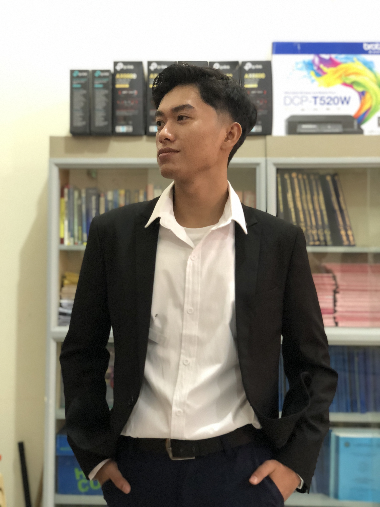

Ivan Reyes
Fullstack Web Developer
I'm a committed front-end developer who loves working with others and has an eye for detail. My goal is to extend my knowledge in both front-end and back-end and seeking a company that gives me an opportunities
About me
A passionate web developer based in the Philippines
I'm an accomplished individual who is eager to broaden his experience in other areas. I'm passionate in learning new tech stack so I can maintain website and provide a seamless user experience. In order to guarantee the best possible creation of web applications,I also open at team-based development and collaboration.
download cv